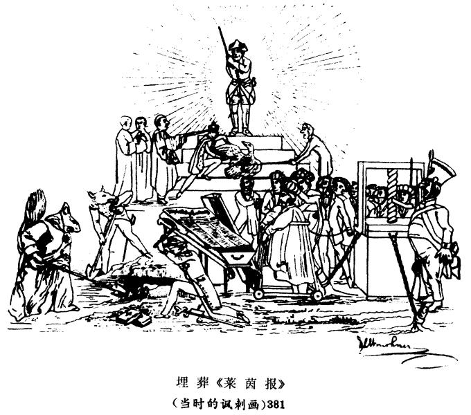

恩格斯致艾米尔・布兰克 1848年5月24日
恩格斯致艾米尔·布兰克
伦敦
1848年5月24日于科伦市赫勒街14号
亲爱的艾米尔：
上星期六我来到了科伦这里。《莱茵报》FN1将在6月1日出版。但是为了不致立即遇到阻碍，我们必须预先在伦敦做一些准备工作，因为那里没有别人，所以冒昧地把这个工作托付给你。
（1）请你在一个报刊经销人那里为我们订阅（从接信之日起，到7月1日止）《电讯》（报）和周刊《经济学家》各一份。由报刊经销人（你可以把他的地址告诉我们，以免我们以后再来打扰你）每天把这两份报刊用邮包或者象通常邮寄报纸那样按印刷品寄给我们，邮件经奥斯坦德寄科伦圣阿加塔街12号威·克劳特先生收。
（2）请把附去的信发出。
（3）请垫付这两份报刊的订费、这封信的邮资等等，这些费用的账单立即寄到科伦圣阿加塔街12号《新莱茵报》发行科，并说明钱应该交付给谁。这样，这笔钱就会立即付清。
报纸出版所需的资金已经筹足。一切都很顺利，现在所缺的就是这些报刊，之后我们就可以开始出版了。《泰晤士报》我们已经收到，头一个月我们只需要上述两种英国报刊。如果你在其他报纸上碰到一些值得注意的东西，并且把它寄给我们，那我们是很高兴的。一切费用当然都将立即归还。我们也希望得到一些能提供有关贸易、经济状况等详细消息的报纸。请来信告诉我，现在伦敦有哪些报纸，好让我们熟悉这方面的情况。
我自然没有见到玛丽亚，因为她还没有到达，我就走了。但是在事情安排好以后，我就立即回去一趟。不过，目前在巴门比任何时候都感到无聊，人们都对在那里所获得的一点点自由表示愤恨。这群蠢驴认为整个世界之所以存在，无非是为了让他们大发横财，而由于在这方面现在遇到阻碍，于是他们就拚命地叫喊起来。如果他们想要取得自由，他们就必须为自由付出代价。法国人和英国人也曾经不得不这样做，但是在巴门，蠢驴们却以为他们应当无偿地得到一切东西。这里的情形看起来要好一些，但也好不了多少。普鲁士人还是那样，在波兰人身上用硝酸银打烙印，而在我写这封信的时刻，美因兹正遭到普鲁士人的炮轰，因为市民自卫军逮捕了几个喝得醉熏熏的胡作非为的士兵；独立自主的法兰克福国民议会虽然听到了炮声，但看样子根本无动于衷。在柏林，康普豪森无所事事地消磨时日，而反动派、官僚和贵族集团却愈来愈猖狂，因而激怒了人民，人民起来造反了。康普豪森的软弱无能和胆小怕事，直接引导我们走向新的革命。德国现在的情况就是这样！
再见。
381
你的 弗·恩·


脚 注
FN1 《新莱茵报》。——编者注
注 释
381 漫画是在政府下令查封《莱茵报》之后画的。前列画的三个掘墓人是主管书报检查的三个大臣：宗教事务、教育和卫生大臣艾希霍恩被画为穿着僧侣法衣的松鼠（见注31），司法大臣米勒带有司法的象征——天平、剑和蒙在眼睛上的布带，还有内务大臣冯·阿尔宁。放在棺材上的是《莱茵报》，周围是戴着嘴套和镣铐的比喻性的人物，象征着反对派报刊。——第508―509页之间。